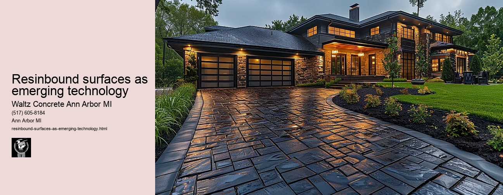

News
Concrete Driveway Installation Ann Arbor Mi
Concrete Driveway Installation Ann Arbor Mi
Choosing the right contractor for installation
Cost of concrete driveway installation in Ann Arbor
Permit requirements for driveway installation in Ann Arbor
The process and timeline of concrete driveway installation
Different types of concrete used in driveways
Maintenance and Repair of Concrete Driveways in Ann Arbor Mi
Maintenance and Repair of Concrete Driveways in Ann Arbor Mi
Preventive maintenance tips for durability
Common causes for concrete driveway damage
Professional companies offering repair services in Ann Arbor
Doityourself versus professional repairs
Costs associated with repairing a concrete driveway
Designs and Styles of Concrete Driveways in Ann Arbor Mi
Designs and Styles of Concrete Driveways in Ann Arbor Mi
Popular design trends for driveways
Considering climate factors when choosing a design or style
Unique customizations available for concrete driveways
Influence of home architecture on driveway design
Stamped stained and decorative options
Environmental Impact of Concrete Driveways in Ann Arbor Mi
Environmental Impact of Concrete Driveways in Ann Arbor Mi
Carbon footprint associated with concrete production
Use of sustainable materials in concrete driveways
Drainage considerations to reduce environmental impact
Local regulations regarding environmentally friendly driveways
Potential use of permeable or porous pavement
Alternatives to Concrete Driveways in Ann Arbor Mi
Alternatives to Concrete Driveways in Ann Arbor Mi
Asphalt driveways and their proscons
Paver stone driveways and their benefitsdrawbacks
Gravel or crushed stone as an alternative option
Comparing costs between different driveway materials
Resinbound surfaces as emerging technology
About Us
Contact Us

Resinbound surfaces as emerging technology
Resinbound surfaces as emerging technology
Title: Resinbound Surfaces: An Emerging Technology
The world of construction and landscaping is never static, as new technologies and materials continue to emerge, offering innovative solutions to traditional challenges. Among the novel advancements in this field is the technology of resinbound surfaces. This has been an exciting development that promises a range of benefits over conventional surface types, highlighting its potential for transforming our public spaces and private properties.
Resinbound surfacing refers to a process where natural aggregate stones are mixed with a high-quality clear resin, creating a mixture which is then laid on a prepared base or surface. Once dried, this creates an extremely durable yet flexible surface that retains the appearance of loose gravel without the associated issues such as displacement or weathering.
One of the key advantages offered by this emerging technology is its durability compared to traditional materials like concrete or asphalt. The binding resin ensures that the aggregate material does not scatter under pressure or due to weather conditions. Additionally, it also delivers enhanced strength that can easily handle heavy footfall and vehicular traffic without damage.
Another compelling attribute of resinbound surfacing technology lies in its permeability. Unlike conventional surfaces which often lead to water accumulation resulting in puddles or flooding during rainfall, resinbound surfacing allows water to seep through into the ground below. This makes it an eco-friendly choice contributing towards effective stormwater management.
The aesthetic versatility offered by resinbound surfaces marks another significant advantage over other traditional materials. Since they employ natural aggregates like gravel, shingle, quartz and crushed granite among others, these surfaces offer a vast array of colors and textures suitable for different design needs from driveways to patios and pathways.
Furthermore, installing these surfaces requires lesser time compared to their traditional counterparts which require substantial curing periods before they can be used optimally. Henceforth with expert guidance at hand even complex installations can be completed within short timescales with reduced disruption.
Despite all these advantages however it's important not to overlook the challenges that accompany this emerging technology. The cost of installation is often higher than traditional surfaces due to the need for specialized equipment and skills. Additionally, its application requires careful preparation of the base layers to ensure a stable and long-lasting surface.
However, these potential issues are not insurmountable and can be managed effectively with proper planning and execution. As awareness of these surfaces increase, advances in technology will likely make them more accessible and affordable.
In conclusion, resinbound surfacing represents an innovative solution within the construction industry as it offers numerous advantages over conventional materials including durability, permeability, aesthetic versatility, quick installation time amongst others. Despite being new on the scene, it shows immense potential towards redefining our urban landscapes while contributing positively towards environmental sustainability through effective water management. Its an exciting prospect that's worth exploring for anyone interested in modern construction methods or eco-friendly design solutions.
Comparing costs between different driveway materials
Resinbound surfaces as emerging technology
Frequently Asked Questions
What is the benefit of using resinbound surfaces over traditional concrete for driveways in Ann Arbor, MI?
Resinbound surfaces offer several advantages over traditional concrete. They are more durable and resistant to weather damage, require less maintenance, and provide a more attractive appearance with a variety of color options. They also allow water to permeate through them which reduces puddling and runoff.
How does the cost of installing a resinbound surface compare to that of a traditional concrete driveway in Ann Arbor, MI?
The initial cost of installing a resinbound surface can be higher than that of a traditional concrete driveway due to the specialized materials and installation process. However, its long lifespan and low maintenance costs could make it more cost-effective in the long run.
Are there any local contractors in Ann Arbor, MI who specialize in installing resinbound surfaces for driveways?
Yes, there are several local contractors in Ann Arbor, MI who specialize in installing resinbound surfaces for driveways. Its recommended to do some research or ask for referrals to find one with good reputation and experience.
Resinbound surfaces as emerging technology